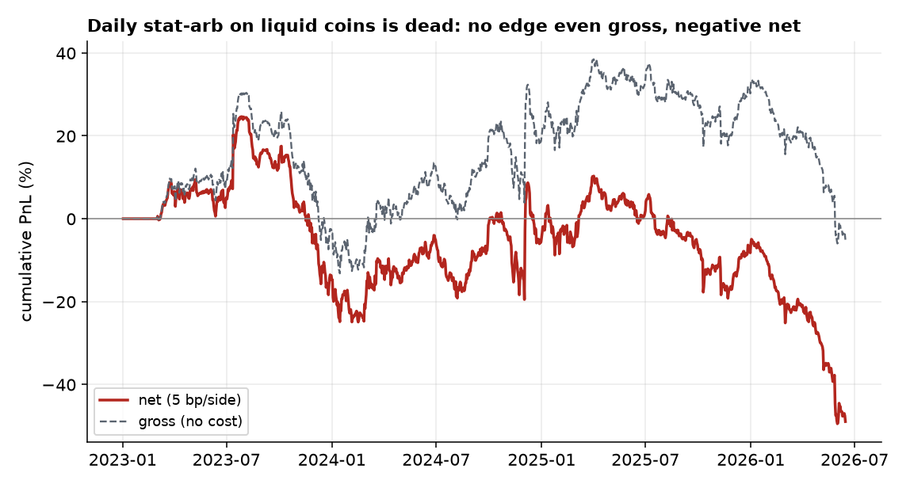
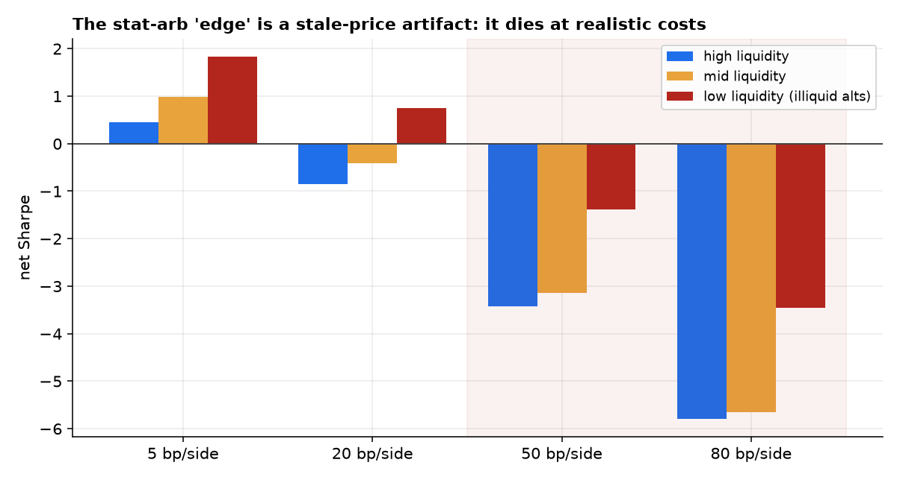
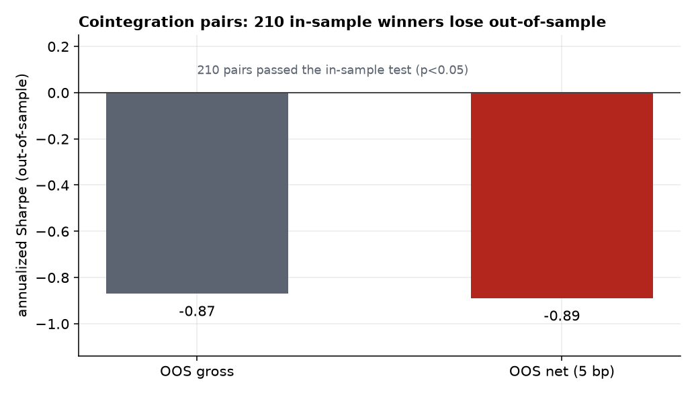

Statistical arbitrage — PCA-residual mean-reversion and cointegration pairs — is the natural place to look for edge in a young, inefficient market, and crypto backtests routinely report >90% pair win-rates. We test whether any of it survives realistic costs out-of-sample, on a daily 30-coin panel (2023–2026) and an hourly ~50-coin panel (2024–2026), with every position estimated strictly walk-forward. It does not. Daily PCA-residual (Avellaneda–Lee s-score) reversion on liquid coins has no edge even gross (Sharpe −0.06) and is strongly negative net (−0.58 at 5 bp/side). The hourly version posts an apparent +0.46 net Sharpe — but it is a stale-price artifact: the edge rises monotonically as liquidity falls (high-liquidity 0.45 → illiquid 1.83), and under realistic per-coin costs it collapses everywhere (illiquid 1.83 → −1.39 at 50 bp, where illiquid alts actually trade). Tellingly, at the unrealistically-low 5 bp the signal is not overfit noise (deflated Sharpe 0.71, PBO 0.21) — it is real non-synchronous-trading reversion that is simply uncapturable. Finally, cointegration pairs are a textbook multiple-testing mirage: 210 pairs that pass the in-sample cointegration test lose out-of-sample even before costs (Sharpe −0.87). There is no net-of-cost crypto stat-arb edge for a small participant; the honest contribution is showing precisely why the headline numbers are illusory.
If alpha lives anywhere in crypto, it should be in statistical arbitrage — exploiting transient mispricings between related coins via mean-reversion. The two canonical engines are PCA-residual reversion (Avellaneda & Lee's “s-score” [1]) and cointegration pairs (Engle–Granger [2]), and crypto backtests of both routinely look spectacular. This paper asks the only question that matters: does any of it survive realistic costs, out-of-sample, for a participant who is not a colocated market maker? Following the series' pattern (Paper 1: a real premium with no tradable edge; Paper 2: a thin premium that is tradable), we pre-register hypotheses and let honest costs and the rigor protocol decide:
Two panels: a daily 30-coin spot panel (Binance, 2023–2026) and an hourly ~50-coin panel (2024–2026) carrying volume for a liquidity split. Leakage control is structural: the s-score at bar $t$ is estimated only from the trailing window ending at $t-1$, and the resulting weights earn the $t\!-\!1\!\to\!t$ return — so the strategy is walk-forward by construction, never fit on data it trades. Cointegration pairs are re-selected each formation window and traded only out-of-sample. Costs are charged on realized turnover; we report a full per-coin cost sweep because, as we show, the conclusion lives or dies on cost realism.
PCA-residual s-score (Avellaneda–Lee). Over a rolling window we extract the top-$k$ eigenportfolios of standardized returns, regress each coin on them, and model the cumulative residual as an OU process. The standardized deviation $s_i=(X_i-m_i)/\sigma_{eq,i}$ is the signal; we go contrarian on it (buy oversold residuals, sell overbought), dollar-neutral, gross exposure 1.0. Cointegration pairs. Each formation window we test all pairs for cointegration (Engle–Granger, $p<0.05$), select the strongest, and trade the spread z-score (enter $|z|>2$, exit $|z|<0.5$) out-of-sample.
Degenerate-signal check first; deflated Sharpe [4] and PBO via CSCV [5] over the configuration grid; purged + embargoed walk-forward; a liquidity-tercile decomposition and a per-tercile cost sweep (the decisive test for stale-price artifacts); and the +0.3 mean-reversion floor as the bar.
On the 30 most-liquid coins, daily PCA-residual reversion has no edge before costs (gross Sharpe −0.06) and is firmly negative net (−0.58 at 5 bp/side, −1.1 at 10 bp, −2.13 at 20 bp), with a −74% maximum drawdown and a 49% win rate (Figure 1). There is simply nothing to harvest where you could actually trade it cheaply.

At hourly frequency the strategy posts an apparent +0.46 net Sharpe. But decomposing by liquidity reveals it for what it is: the Sharpe rises monotonically as liquidity falls — 0.45 (high-liquidity) → 0.98 (mid) → 1.83 (illiquid alts) — the signature of non-synchronous-trading mean-reversion [3], where stale prices in thinly-traded coins “revert” mechanically. The decisive test is the per-coin cost sweep (Figure 2): the edge survives only at an unrealistically low 5 bp/side. At the spreads illiquid alts actually carry (50–100 bp), it is deeply negative — illiquid 1.83 → −1.39 (50 bp) → −3.46 (80 bp) — and even the liquid tercile turns negative by 20 bp. The edge lives exactly where it cannot be captured.

| Net Sharpe | 5 bp | 20 bp | 50 bp | 80 bp |
|---|---|---|---|---|
| High liquidity | 0.45 | −0.86 | −3.42 | −5.79 |
| Mid liquidity | 0.98 | −0.42 | −3.14 | −5.65 |
| Low liquidity (illiquid) | 1.83 | 0.75 | −1.39 | −3.46 |
Crucially, this is not an overfitting story. At the (fictional) 5 bp cost, the hourly strategy passes selection rigor — deflated Sharpe 0.71, PBO 0.21, walk-forward OOS 0.36. The reversion is statistically real; it is just economically uncapturable. That distinction is the point.
Cointegration pairs fail differently — through selection. Across formation windows, 210 pairs passed the in-sample cointegration test ($p<0.05$). Traded out-of-sample, they lose money even before costs (Sharpe −0.87 gross, −0.89 net; Figure 3). Testing hundreds of pairs guarantees spurious in-sample cointegration that does not persist — the headline “>90% win-rate” backtests are selecting noise.

Crypto looks like the ideal habitat for statistical arbitrage, and the backtests oblige. Every one of them, here, is an illusion — but the illusions have two distinct anatomies worth separating.
There is no net-of-cost statistical-arbitrage edge for a small participant in crypto: the apparent hourly signal is non-synchronous-trading mean-reversion in illiquid coins — real, but uncapturable once you pay their true spreads — and in-sample-selected cointegration pairs are a multiple-testing mirage that loses out-of-sample.
The PCA-residual edge is a measurement illusion: stale prices in illiquid coins manufacture mechanical reversion that a naive flat-cost backtest counts as alpha, but that the coins' real 50–100 bp spreads erase. The cointegration edge is a selection illusion: enough pairs, enough tests, and some will look cointegrated in-sample by chance. Neither survives the honest treatment. This completes a clean triptych across the series — Paper 1's real-but-untradable premium, Paper 2's thin-but-tradable factor, and Paper 3's tradable-looking-but-illusory edge — and underscores the program's thesis: in efficient-enough markets, rigorous cost modeling and out-of-sample discipline are the alpha, because they are what separate the one real edge from the many fake ones.
Cost model. We use per-side cost levels rather than coin-by-coin measured spreads; the conclusion is robust because we sweep the full plausible range and illiquid alts demonstrably trade at 50–100 bp, but a tick-level spread series would sharpen the per-coin picture. No order book. We test signal economics, not execution — a colocated market maker posting passively (negative-fee, queue-priority) faces a different cost structure, which is the subject of Paper 5 (liquidity provision), not this paper. Universe & survivorship. Today's liquid names; a point-in-time, delisted-inclusive universe would, if anything, strengthen the negative (dead coins add stale-price noise, not edge). Scope. We test PCA-residual and Engle–Granger pairs; richer structures (Johansen baskets, ML-selected spreads, lead–lag across venues) are unlikely to overturn the cost and selection problems, but a cross-venue lead–lag study on a fast feed is the one direction with a non-trivial prior — left to future work.